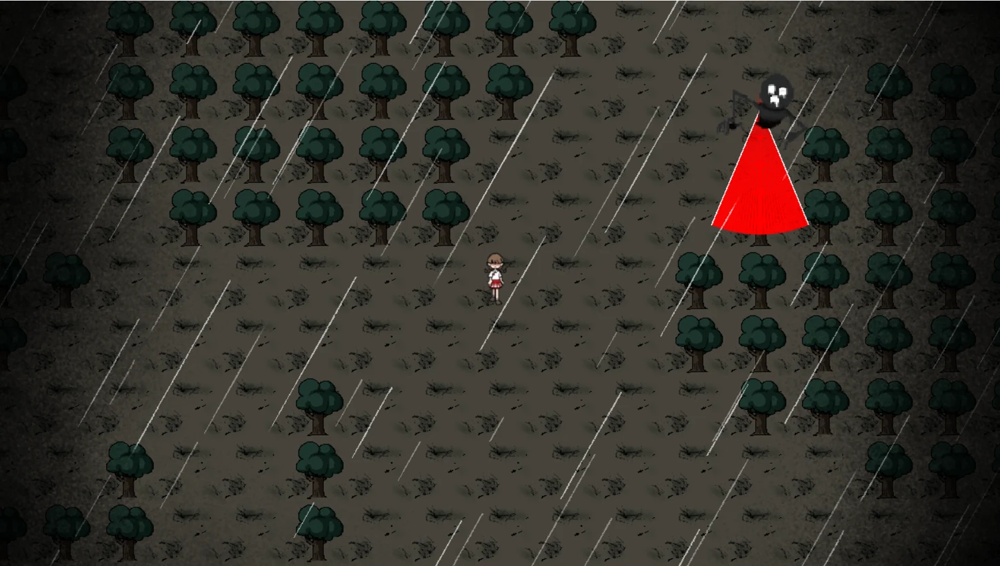
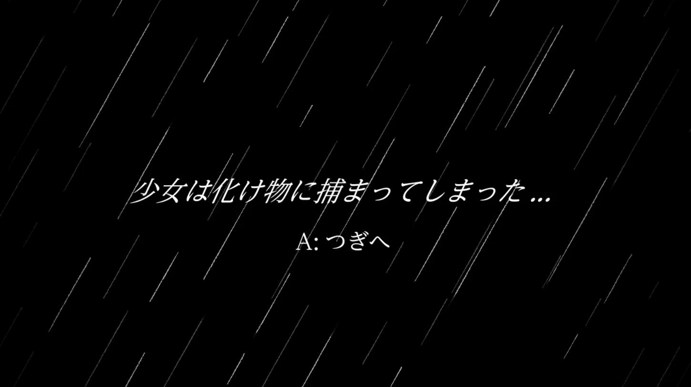

GAME DEVELOPMENT / GAME JAM 02
雨天の迷宮
雨が降るマップで敵の巡回・追跡を避け、傘を探して回収する探索・逃走型ゲーム。2年次のチーム制作で、マップ制作・ステージ選択と雨の演出を担当しました。
開発環境
C++ / DxLib
ステージ構成
3種類の固定マップから選択
本人の主担当
マップ制作・選定処理・雨演出
実際のプレイ画面

プレイ動画
学内ゲームジャム作品のプレイ映像です。画面だけでは伝わりにくい雨の動きやゲーム進行を確認できます。
YouTubeでプレイ動画を開くhttps://youtu.be/IUESPNLyn7A
作品の構成
開始時に3つのステージCSVからランダムで1つを選んで読み込みます。各ステージにはマップの配置に加え、プレイヤー・傘・敵の配置データと敵の巡回ルートを指定するCSVを用意しました。
毎回マップを自動生成する方式ではなく、あらかじめ作成した3種類の固定マップから選ぶ仕組みです。
担当した実装・制作
- マップ選定：乱数から0〜2の値を選び、対応するステージCSVと敵の配置・巡回ルートの情報を読み込む仕組みを担当。
- マップ制作：3ステージ分の42列×27行のタイル配置CSVを制作。通行できる場所や障害物、壁の配置を調整。
- 雨の演出：遠景と近景の雨画像を異なる速度・透明度・カメラ追従量でスクロールさせ、奥行きと雨量を表現。
敵のAIやキャラクターのすべての挙動を一人で実装したという意味ではありません。チーム作品のうち本人が担当した範囲を記載しています。
雨の演出で工夫したこと
遠景は薄くゆっくり、近景は濃く速く動かし、カメラ移動量に異なる係数を掛けて視差を作りました。画面端で雨が途切れないよう、スクロール位置を余りで処理しながら画像を繰り返して描画しています。
遠景の雨
速度 (-60, +120) / 透明度 70 / カメラ追従 0.08
近景の雨
速度 (-160, +300) / 透明度 160 / カメラ追従 0.22
画面端の処理
スクロール位置を余りで処理し、複数枚を配置して継ぎ目を抑制
その他の画面

制作内容の補足
ステージ選択の処理はScene/Loading/LoadingScene.cpp、ステージデータはResource/Stage/およびResource/CreatePoint/、雨の描画はScene/InGame/InGameScene.cppに関連しています。
作品の遊び方と本人の担当範囲を中心に紹介しています。ゲーム本体・チームのソース一式は、このページからは配布していません。